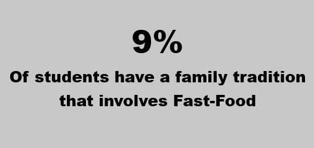

| Main Page | McDonalds Data | Canteen Data | Surveys and Interviews | Miscellaneous |
Fast-Food Data |
||
Geographic Heat Map of most Popular McDonalds Locations |
The most popular McDonalds is the Vermont South location, as it is closest to the Vermont South campus. Next popular is the Knox McDonalds, Followed by Blackburn and Burwood. |
|
Students particularly like KFC and McDonaalds food. Hungry Jacks and Subway come in a close 3rd and 4th respectively. |
Students Favourite Fast-Food Restaurant |
|
|
Advertisments which are most memorable to students |
We can see the majority of students remeber seeing the most advertisments from McDonalds, This may be one of the reasons why McDonalds is particularly popular with students.
|
|
Factors behind student consumption of Fast-Food |
||
The most popular time for McDonalds is at the end of the year, then as the new year starts, sales drop rapidly, before climbing back up at the end of the year A potential reason for the rapid drop is New Year Resolutions, and people wanting to diet away from McDonalds. |
2022 Burwood McDonalds Sales Data |
9% of students say they have a family tradition which involves the consumption of fast food. Common traditions include: Eating out on fridays, Birthdays and Special Celebrations |
 |
Having a time constraint is the main reason students are consuming fast food. Additionally, factors such as mood and weather also influence consumption of fast food |
Factors and Reasons students are consuming Fast-Food |